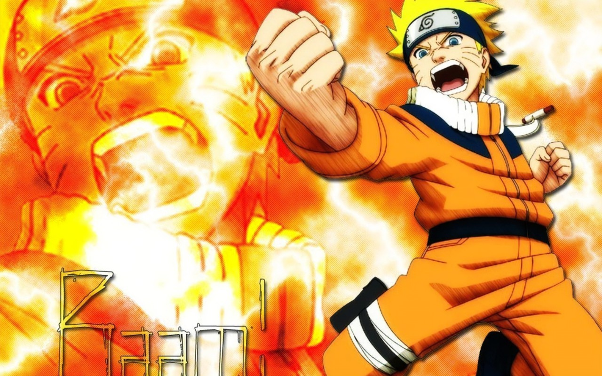
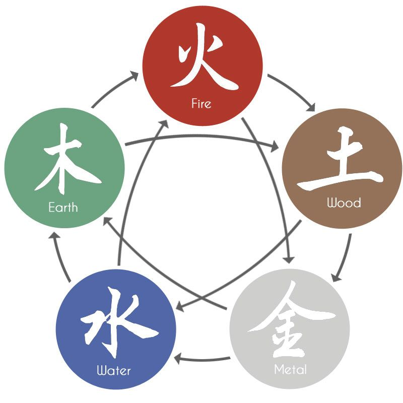
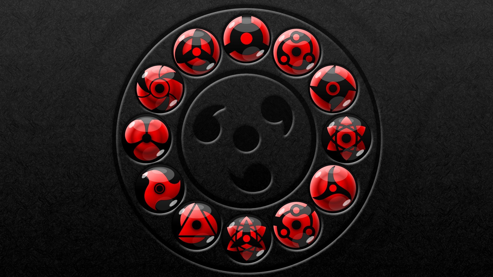

Major Themes of Naruto
Perseverance and Dreams: "Naruto's story is driven by his unwavering determination to become Hokage, showcasing the importance of perseverance and believing in one's dreams despite adversity." Friendship and Loyalty: "The bond between Naruto, Sasuke, and Sakura, as well as their relationships with other characters, highlights the strength of friendship and loyalty in overcoming challenges." Good vs. Evil: "The series explores complex moral dilemmas and the battle between good and evil, as characters confront their inner demons and external threats."
Naruto Elements
The Fire element, or Katon, allows ninjas to create and manipulate flames. This element is known for its destructive power and versatility in combat. The Water element, or Suiton, allows ninjas to manipulate water, creating various forms of liquid attacks and defenses. This element is highly adaptable and can be used in both offense and defense. The Wind element, or Fūton, involves the manipulation of air and wind. This element is known for its cutting and piercing abilities, making it effective for both offensive and tactical uses. The Earth element, or Doton, involves the manipulation of earth and stone. This element is primarily used for creating defensive structures and altering terrain, making it highly effective in controlling the battlefield.The Lightning element, or Raiton, allows ninjas to manipulate electricity. This element is known for its speed and power, often used to enhance attacks or create devastating electrical strikes.
The Sharingan
The Sharingan is a formidable dojutsu (eye technique) exclusive to the Uchiha clan in Naruto, characterized by its distinct red eyes with tomoe (comma-shaped marks) that signify the user's mastery level. Initially, the Sharingan enhances visual perception, allowing its user to see fast movements and predict actions, effectively resist and counter genjutsu (illusion techniques), and replicate any jutsu they witness. As it evolves, the Sharingan can transform into the Mangekyō Sharingan, granting access to powerful and unique abilities such as Amaterasu (black flames that burn endlessly), Tsukuyomi (a genjutsu that distorts time perception), and Susanoo (a gigantic, protective chakra construct). Further evolution leads to the Eternal Mangekyō Sharingan, which removes the risk of blindness from excessive use and enhances abilities, including a perfected version of Susanoo and the potent Kotoamatsukami (a genjutsu that subtly controls others’ thoughts). The Sharingan's ultimate evolution, the Rinnegan, combines the Sharingan with Senju DNA, unlocking even greater powers, such as control over gravity and six paths of power. This eye technique is central to the Uchiha clan’s identity and the series’ plot, symbolizing both the strength and the tragic burden of its bearers.
